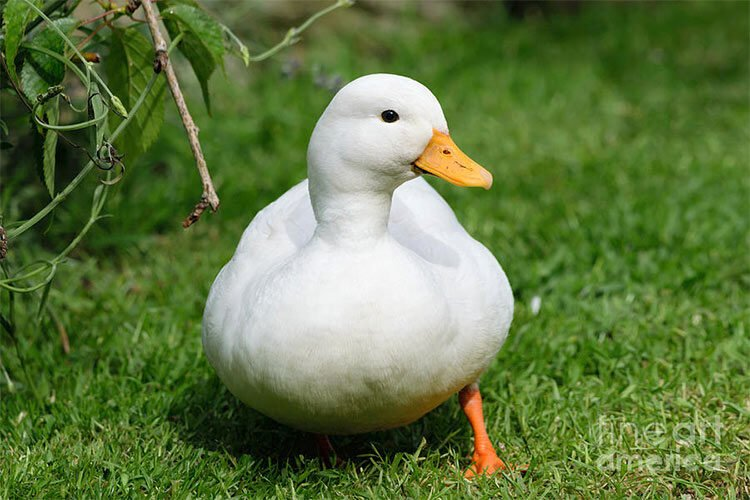
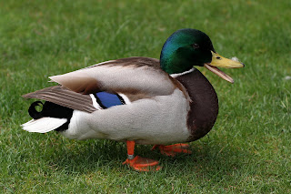
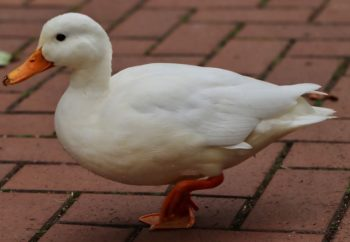

Actividad 2 enfocada en patos...
Si se dan cuenta
Si se fijan bien
Abajo
Podemos ver
3
patos



Previous
Next
¿Por qué patos?
Porque estaba mirando instagram en el break y me salio
un patito
, por eso fue
¿Son felices los patos?
SI
Al verlos en el lago en familia se les ve bien comodos y no tienen preocupaciones..
¿Cómo hacen los patos?
Cuak